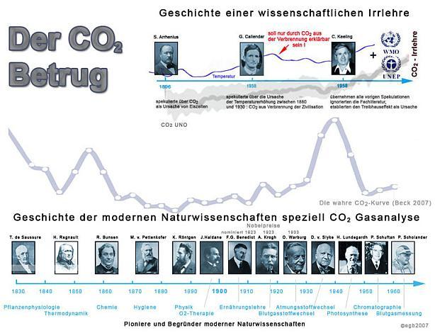
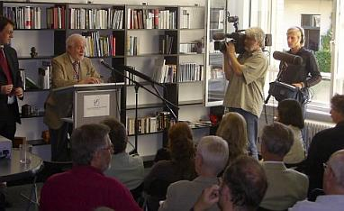
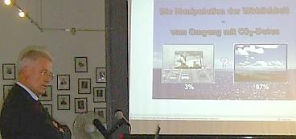
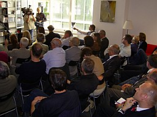

* Temperaturmessungen inzwischen einen Abkühlungstrend belegen - siehe hier: RSS Analysis of MSU and AMSU Data
Martin Durkin: The Great Global Warming Swindle, CD mit dem sensationellen Klimaschocker-Film, der die mediale Aufklärung rund um den Ökoterrorismus kräftig anfeuerte.
Empfohlene Literatur der führenden deutschen und internationalen Ökokritiker / Klimaleugner / Klimaschutzskeptiker / Wetterkundler / Klimahistoriker:Empfohlene Links:
 <======== ZeitGeist 1/09: Kontra Ökobetrug
<======== ZeitGeist 1/09: Kontra Ökobetrug Das Skeptiker-Handbuch - Bildklick zum Download ========>
Das Skeptiker-Handbuch - Bildklick zum Download ========>